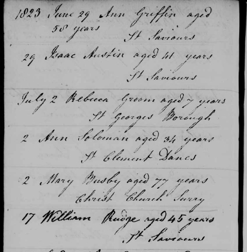

William Rudge's Burial Record

Burial Record: "1823... July... 17 William Rudge aged 45 years St. Saviour" Register of Burials at Deadmans Place Independent Chapel on Union Street, in the parish of Southwark, London from 1805 to 1837. RG4/Piece 4360/Folio 94.
Last updated on 20 Mar 2010